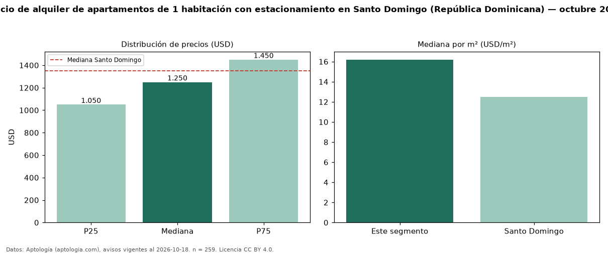

Precio de alquiler de apartamentos de 1 habitación con estacionamiento en Santo Domingo (República Dominicana) — octubre 2026
Con 259 avisos vigentes, el canon mediano de apartamentos de 1 habitación con estacionamiento en alquiler en Santo Domingo (República Dominicana) es USD 1.250 al mes. Frente a la mediana de los apartamentos de 1 habitación en alquiler de Santo Domingo (USD 1.100, n = 1.050), queda 14 % por encima; este segmento reúne el 25 % de esos avisos. Por metro cuadrado, la mediana es USD 16,20/m² al mes (n = 216), 6 % por encima de los apartamentos de 1 habitación en alquiler de Santo Domingo (USD 15,31/m²). El área mediana anunciada es 77 m². La mediana de todos los apartamentos en alquiler de Santo Domingo es USD 1.350 (−7 % de diferencia). La mitad central de los avisos va de USD 1.050 a USD 1.450 (razón 1,4), una dispersión baja. Datos: Aptología (aptologia.com), CC BY 4.0 — https://www.aptologia.com/do/alquiler/santo-domingo. Archivos: PDF, CSV con las cifras y gráfica PNG.

| Avisos únicos | 259 |
|---|---|
| Percentil 25 | COP 1.050 |
| Mediana | COP 1.250 |
| Percentil 75 | COP 1.450 |
| Mediana por m² | COP 16 |
Fuente: avisos vigentes de portales inmobiliarios recopilados por Aptología, deduplicados (mínimo 30 avisos únicos por celda). Precios pedidos, no cerrados. Fecha: 2026-10-18.